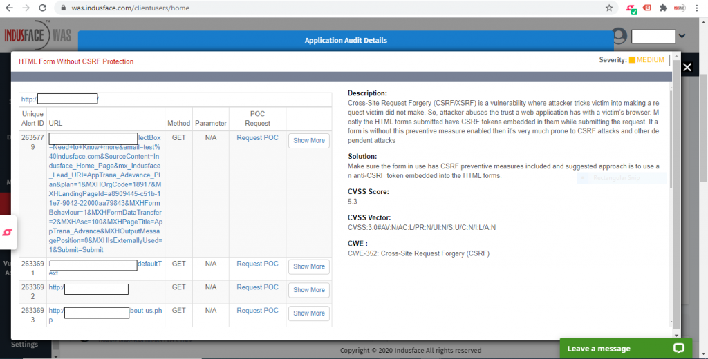
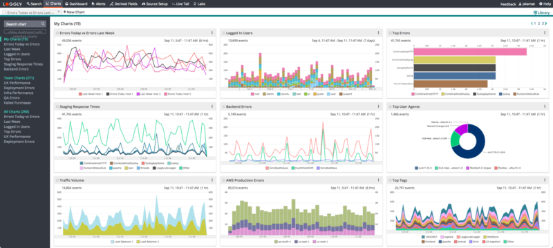

Python alat za automatsko otkrivanje XSS, SQL Injection i drugih ranjivosti, baziran na OWASP Top 10.
Python · OWASP · LinuxOvaj projekat predstavlja razvoj vlastitog alata za automatsko otkrivanje sigurnosnih ranjivosti u web aplikacijama, sa fokusom na OWASP Top 10 standard. Alat analizira web aplikacije tako što simulira ponašanje napadača: šalje prilagođene zahtjeve, ubrizgava payload-e, ispituje reakcije servera i na osnovu njih otkriva potencijalne sigurnosne propuste.
Sistem koristi modularnu arhitekturu — svaki sigurnosni test funkcioniše kao zaseban modul (npr. XSS modul, SQL Injection modul, CSRF modul). Ovakav pristup omogućava jednostavno dodavanje novih vrsta napada bez potrebe da se mijenja jezgro aplikacije.
Alat funkcioniše kroz tri glavne faze testiranja:
Prva faza je rekognicija, tokom koje alat analizira HTTP zaglavlja, provjerava sigurnosne konfiguracije servera poput Content-Security-Policy ili Strict-Transport-Security, te detektuje potencijalno ranjive tehnologije ili zastarjele verzije. Takođe mapira strukturu linkova i forme kako bi pripremio teren za aktivno testiranje.
Druga faza je aktivno testiranje ranjivosti. Alat koristi biblioteku prilagođenih payload-a koje sam razvio/la, uključujući XSS testove kroz ubrizgavanje JavaScript payload-a, SQL Injection testove koji detektuju anomalije u odgovorima servera, provjere CSRF zaštite analizom tokena, Directory Traversal pokušaje i jednostavnu simulaciju brute-force napada radi provjere postoji li rate limiting.
ća faza uključuje generisanje izvještaja. Nakon završenog skeniranja, alat automatski kreira HTML izvještaj koji sadrži listu pronađenih ranjivosti razvrstanih po nivou ozbiljnosti, pogođene URL-ove, tehnički opis problema, referencu na OWASP kategoriju i preporuke za mitigaciju. Svaki izvještaj se arhivira sa timestamp-om radi praćenja napretka kroz vrijeme.
U razvoju alata korištene su tehnologije poput Pythona, regularnih izraza za detekciju anomalija, HTTP analiza, Linux okruženje, kao i OWASP Top 10 metodologija. Projekat uključuje modularnu Python arhitekturu, log sistem, te osnovni mehanizam za rukovanje greškama i neočekivanim odgovorima servera.
Web aplikacija za analizu logova i detekciju brute-force napada i sumnjivih obrazaca.
Node.js · SQL · Chart.jsSecurity Log Analyzer je web aplikacija koju sam razvila kako bih olakšala analizu i vizualizaciju logova koji potiču iz različitih izvora, kao što su web serveri, aplikacije, autentikacijski servisi i mrežni uređaji. Projekat je nastao iz potrebe da se brže identifikuju anomalije i potencijalne sigurnosne prijetnje unutar velikih setova logova.
Aplikacija omogućava korisniku da učita log datoteke, organizuje ih i filtrira po različitim kriterijima kao što su IP adresa, timestamp, tip događaja ili statusni kod. Na ovaj način je moguće precizno izolovati sumnjive aktivnosti ili greške koje mogu ukazivati na napade, pogrešne konfiguracije ili neuspješne pokušaje prijave.
Jedan od ključnih elemenata sistema je modul za detekciju obrazaca napada. Kroz kombinaciju regularnih izraza i logičkih pravila aplikacija automatski prepoznaje potencijalne brute-force napade, neuobičajene sekvence zahtjeva, ponavljane greške autentikacije, te neobične korisničke agente ili geolokacije IP adresa. Rezultati se prikazuju kroz jednostavan dashboard.
Frontend dio aplikacije uključuje interaktivne grafove i vizualizacije, omogućene korištenjem biblioteke poput Chart.js, što pruža pregled trendova i statističkih podataka. Backend je razvijen u Node.js/Express okruženju, dok SQL baza služi za skladištenje strukturiranih log informacija, filtriranih rezultata i generisanih alert-ova.
Dodatno sam kreirala Python skriptu za automatsku obradu sirovih logova prije unosa u sistem. Ova skripta normalizuje formate, izdvaja ključne podatke i priprema ih za parsiranje, čime aplikacija može raditi sa logovima različitog porijekla.
Ovaj projekat pokazuje sposobnost rada sa podacima, backend arhitekturom, sigurnosnim principima i vizualizacijom. Demonstrira razumijevanje mrežnih napada, log analize i sigurnosnog monitoring pristupa, što ga čini vrlo relevantnim za cyber security u praksi.
Sistem za upravljanje korisničkim privilegijama, sa sigurnim autentikacionim i audit mehanizmima.
JWT · SQL · bcryptAccess Control Manager je sigurnosno orijentisan web sistem namijenjen za upravljanje korisnicima, ulogama i privilegijama kroz klasični RBAC (Role-Based Access Control) model. Projekat sam razvila kako bih implementirala profesionalne mehanizme autentikacije, autorizacije i evidencije korisničkih aktivnosti.
Sistem omogućava kreiranje korisnika, dodjeljivanje uloga i precizno definisanje njihovih privilegija. Na primjer, administrator može imati pristup nadzornim panelima i editovanju svih podataka, dok korisnici sa nižim privilegijama imaju ograničen pristup samo određenim resursima. Ovaj model povećava sigurnost sistema i sprečava neželjene manipulacije.
Autentikacija je implementirana korištenjem sigurne metode bazirane na JSON Web Tokenima (JWT), što omogućava pouzdano upravljanje sesijama i pristup serveru bez potrebe za čuvanjem osjetljivih podataka u kolačićima. Lozinke su hashirane korištenjem bcrypt algoritma kako bi se osiguralo da se nikada ne pohranjuju u čistom tekstu.
SQL baza podataka čuva strukturu korisnika, uloga i permissiona, kao i audit log — centralno mjesto u kojem se bilježe sve bitne akcije korisnika, uključujući prijave, promjene privilegija i pristup osjetljivim resursima. Ovaj audit sistem pomaže u detekciji sumnjivih aktivnosti i predstavlja važan mehanizam u sigurnosnim inspekcijama.
Frontend interfejs je razvijen tako da bude jednostavan, organizovan i efikasan, uz jasnu vizuelnu distinkciju između različitih uloga. Backend logika obuhvata validaciju zahtjeva, sanitizaciju korisničkog inputa, rate-limiting zaštitu i provjeru dozvola prije izvršavanja bilo koje akcije.
Ovaj projekat demonstrira poznavanje sigurnog backend razvoja, rad sa autentikacionim sistemima, dizajn i implementaciju autorizacije, rad sa bazama podataka i sigurnosnu arhitekturu u praksi. Predstavlja izuzetno važan dio tvog portfolio seta i jasno pokazuje kombinaciju softverskog i sigurnosnog znanja.